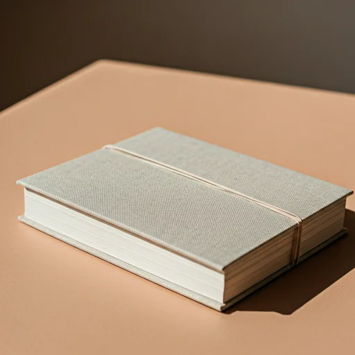

Warum ein Hochzeitsalbum? Erinnerungen zum Anfassen
Ich sage euch ehrlich: Einer der Momente, die mich als Fotografin am meisten berühren, ist nicht der Klick des Auslösers — es ist der Augenblick, in dem ein Paar zum ersten Mal sein fertiges Album in den Händen hält. Wenn die Finger über das Leinen streichen, die erste Seite aufgeschlagen wird und plötzlich Tränen kommen. Weil alles wieder da ist. Jedes Gefühl. Jede Umarmung. Jeder Blick.

Ein Buch braucht kein Passwort
Kein Login, kein Update, kein Akku. Ein Album liegt einfach da — auf eurem Couchtisch, im Regal, griffbereit. Es wartet geduldig darauf, aufgeschlagen zu werden. Und es wird in 30 Jahren noch genauso schön sein wie heute.
Bewusst erinnern
Ein Album durchblättern ist das Gegenteil von Social-Media-Scrollen. Es ist ein bewusster, langsamer Moment. Keine Benachrichtigungen, keine Ablenkung — nur ihr, euer Tee und die Erinnerung an den schönsten Tag eures Lebens.

Erinnerungen, die man fühlen kann
Wisst ihr, was mich an einem gedruckten Album am meisten fasziniert? Es spricht alle Sinne an. Die Struktur des feinen Leinens unter euren Fingerspitzen. Der zarte Geruch von hochwertigem Papier. Das satte, fast feierliche Geräusch beim Umblättern einer schweren Seite. Ein Album ist kein Produkt — es ist ein Ritual.
- Handgebunden in einer italienischen Manufaktur
- Fine-Art-Papier in Museumsqualität — archivbeständig
- Langlebige Leinen- oder Ledercover, individuell geprägt
Eure Enkel werden es durchblättern
Stellt euch einen Sonntagabend in 30 Jahren vor. Eure Kinder — vielleicht schon selbst erwachsen — ziehen das Album aus dem Regal. Sie setzen sich zu euch aufs Sofa, schlagen es auf, und plötzlich erzählt ihr Geschichten, die ihr beinahe vergessen hättet. Wer neben wem saß, warum Opa bei der Rede geweint hat, wie der Wind das Kleid gehoben hat. Das Album wird zum Geschichtenerzähler eurer Familie — ein Erbstück, das keine Batterie braucht und keine Software-Updates. Etwas, das bleibt.
Gemeinsam auf dem Sofa — euren Tag nochmal erleben
Für mich ist ein Hochzeitsalbum viel mehr als eine Sammlung schöner Bilder. Es ist ein Ritual. Am Jahrestag das Buch hervorholen, sich eine Tasse Tee machen, gemeinsam auf dem Sofa sitzen und Seite für Seite nochmal eintauchen — in die Aufregung des Morgens, die Tränen bei der Zeremonie, die Ausgelassenheit auf der Tanzfläche. Das ist es, was ein gedrucktes Album kann, was keine Galerie je schaffen wird.
Warum professionelle Gestaltung den Unterschied macht
Ich weiß, es gibt Online-Tools, mit denen ihr selbst ein Fotobuch gestalten könntet. Aber Hand aufs Herz: Wie viele Paare setzen sich nach der Hochzeit wirklich hin und machen das? Die Wahrheit ist — die meisten nie. Bei mir bekommt ihr ein Album, das ich mit demselben künstlerischen Anspruch gestalte wie eure Reportage. Jede Seite erzählt einen Teil eurer Geschichte, mit Weißraum, Rhythmus und Dramatik.
- Professionelles Layout mit erzählerischem Bogen
- Farbkalibrierte Druckvorbereitung
- Fine-Art-Druck auf archivbeständigem Papier
- Handgefertigt in einer Manufaktur in Italien

Eure Hochzeitsfotografin aus Kassel
Seit über 10 Jahren halte ich die leisen und lauten Momente des Lebens fest. Für mich endet die Arbeit nicht mit der Übergabe der digitalen Galerie — sie beginnt dort erst richtig. Meine Fine-Art-Alben, handgefertigt in einer Manufaktur in Italien, sind das Herzstück meiner Arbeit. Weil Erinnerungen etwas sind, das man in den Händen halten sollte.